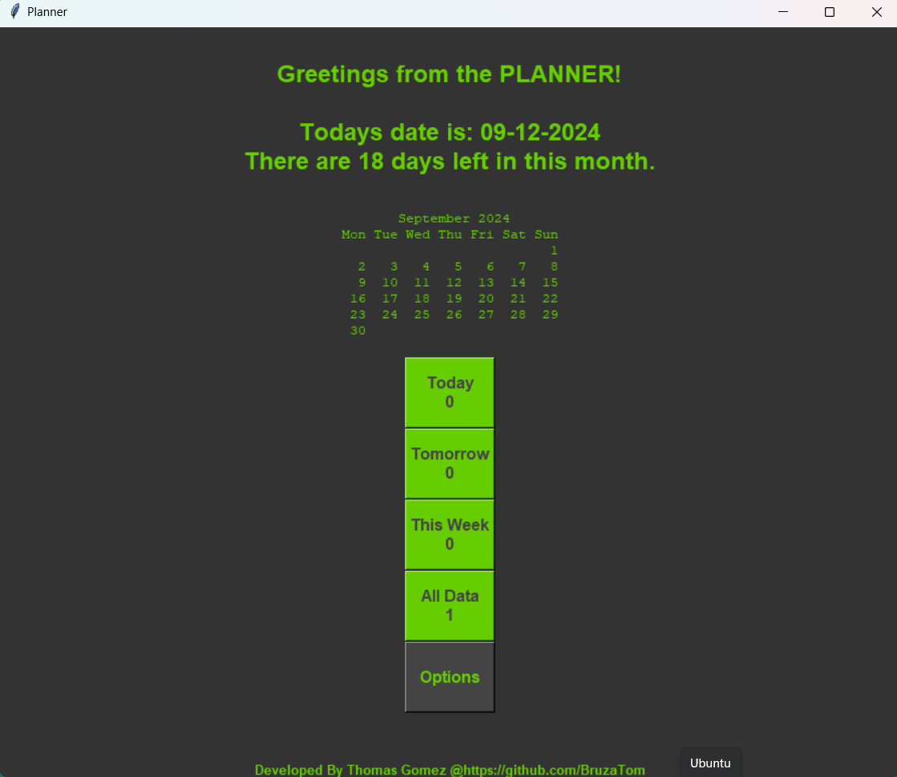

Thomas' Projects
The Planner

The Planner is my version of never missing an appointment. Before coming back to programming I still had the organizational bug! I would spend my free time making planners aswell as the papertrail that followed.. Once i started taking classes with boot.dev, I decided take my little hobby and turn it into a project. I must add that my mother was a big insparation for the project, since she was having alot of events to juggle and i wanted to help her get a look at her schedual. The planner I created provides a daily schedual, a look at tomorrows schedual, a look at whats coming up this week, and all events schdualled provided the date exists in roughly 900 years.